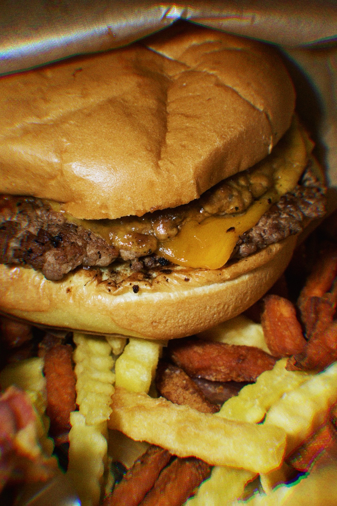
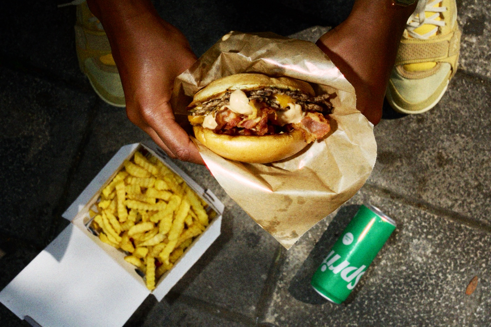
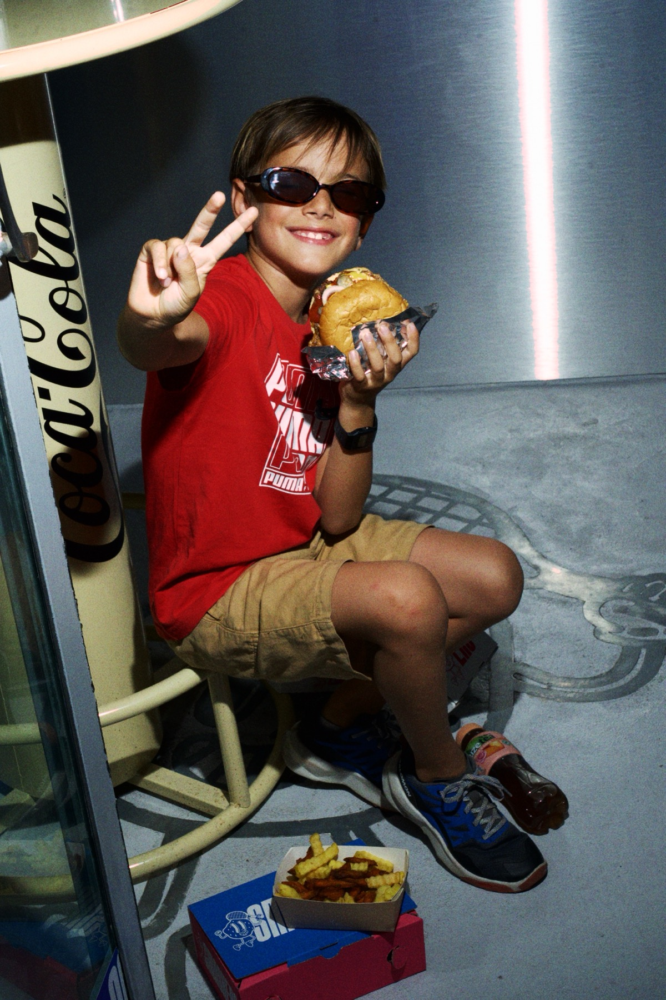
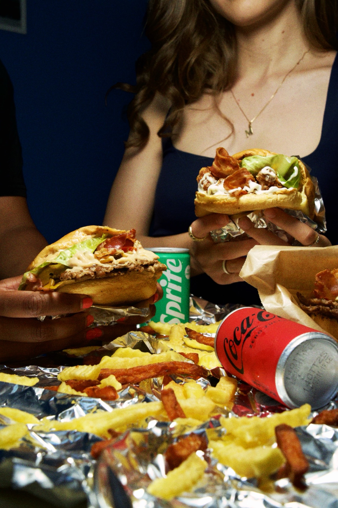
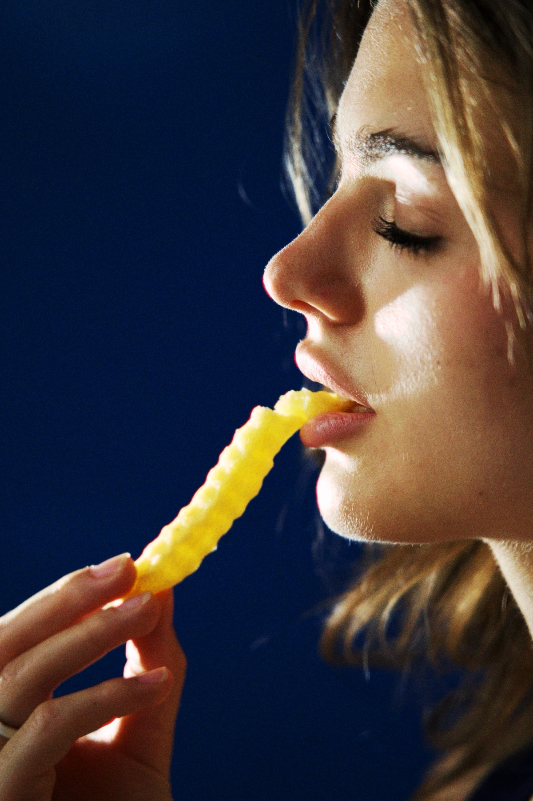
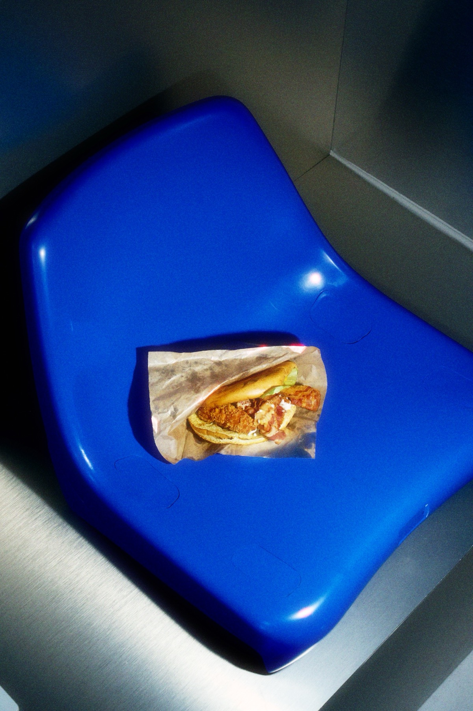

Client · Food
Photo and video for a Messina burger launch — built on a nightlife relationship going back to 2021.
← Back to FoodSmashers started from an existing relationship, not a cold booking. Francesco and the founder had already worked together since 2021, on nightlife video and photography — different rooms, different crowds, a different kind of energy entirely. Smashers was the founder's first burger project, and when it came time to open, he brought Francesco in rather than starting that relationship over with someone new.
That meant the approach had to shift. Nightlife work is dark, fast, reactive — you're chasing movement in low light. A burger launch asks for something more controlled: product that reads as fresh and generous, people actually enjoying the food rather than posing with it, a tone that's social-first rather than editorial. Photo and video both, built for the opening and for the account afterward — the same instinct for a room and a moment, redirected at a counter instead of a dancefloor.
Product, people, and the room together — the same energy the nightlife work always chased, redirected at a burger counter.





